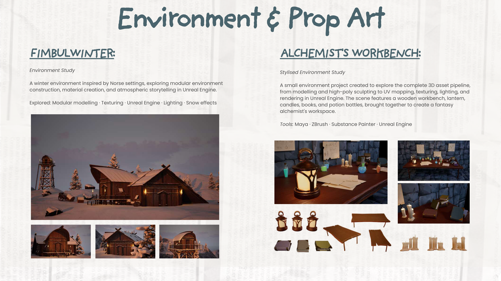
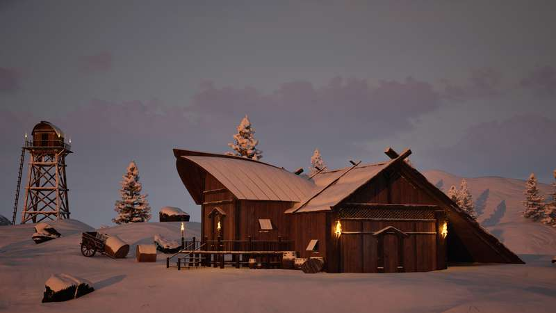
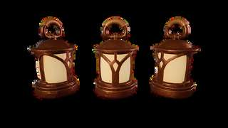
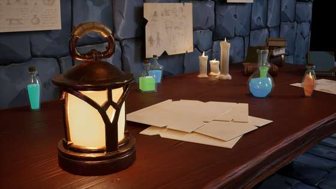
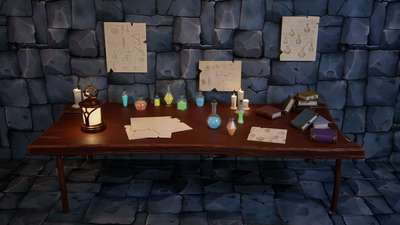

ENVIRONMENT & PROP ART
Modular world-building, material authoring, asset pipelines, and atmospheric storytelling in Unreal Engine.

FIMBULWINTER // ENVIRONMENT STUDY
A winter environment inspired by Norse folklore and harsh northern wilderness, exploring modular environment construction, dynamic material creation, volumetric lighting, and atmospheric storytelling in Unreal Engine.
EXPLORED: Modular building kit · Landscape materials · Snow particle & accumulation shaders · Unreal Engine lighting


ALCHEMIST'S WORKBENCH // COMPLETE ASSET PIPELINE
A stylized environment project created to explore the complete end-to-end 3D asset pipeline — from initial box modeling and high-poly ZBrush sculpting to UV mapping, PBR texturing, and final cinematic lighting inside Unreal Engine. The scene features a weathered wooden workbench, glowing brass lantern, wax candles, leather-bound books, and hand-blown potion bottles, brought together to craft a fantasy alchemist's workspace.
TOOLS: Autodesk Maya · Pixologic ZBrush · Substance 3D Painter · Unreal Engine


Building stylized environments taught me rigorous technical discipline: optimizing polygon budgets, clean topology, UV packing efficiency, texture density consistency, and balancing storytelling mood with performant real-time lighting.